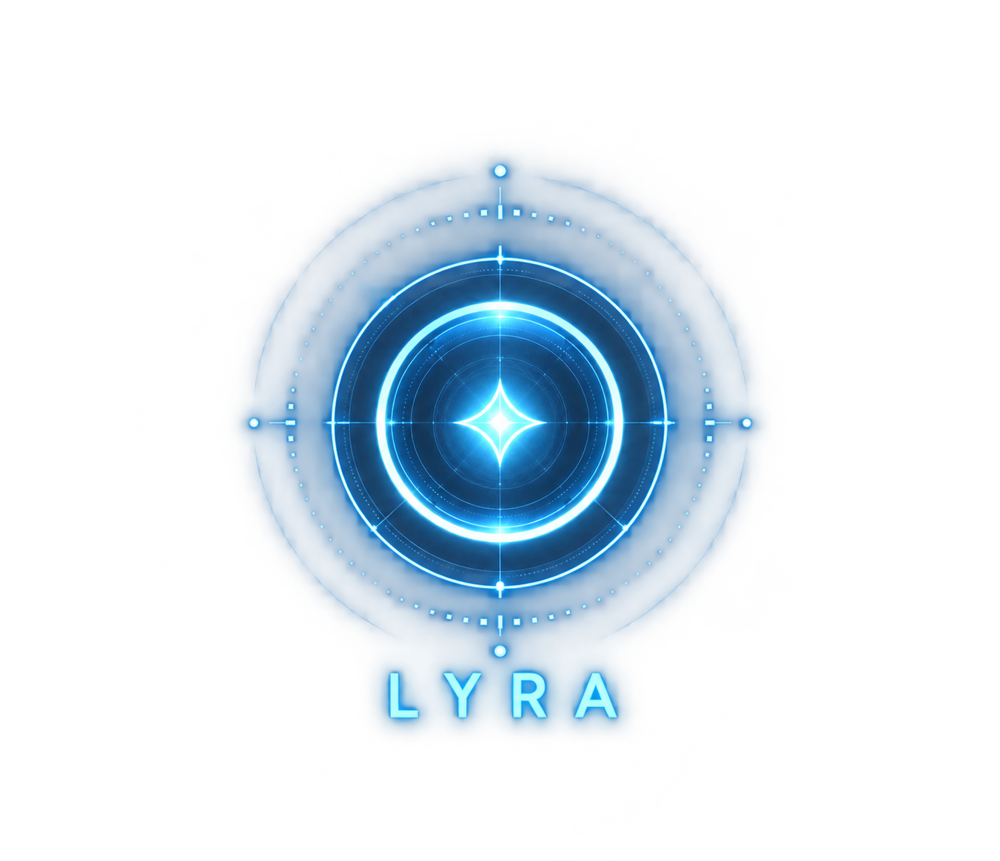

Selected, source-grounded paraphrases. Changes require separate content review.
ChatGPT opens separately. This launcher does not send the map, selected stars or source records to ChatGPT. Voice does not know the selected map context.
Your browser may open a tab instead of a compact window, or block the popup.
Project Wildline explores everyday continuity: recovering context, understanding decisions and managing responsibilities. Living Legacy is one curated chapter of this ongoing engineering journey.
Future vision: authorized family members could explore selected, personally authored history through source-grounded conversational AI, with consent, privacy and unanswered questions preserved. This is not implemented here; AI must not impersonate a person or claim undocumented knowledge.
What happened → What was understood → What was challenged → What changed → What followed → Why it mattered.
These are curated paraphrases of selected sources. Source panels distinguish documented implementation, founder accounts, experiments and future vision. The story slider follows editorial reading order; missing historical dates remain unknown.
Solid record links are documented progression or correction references. Dotted links are thematic reading connections. Chapter lines and orbital dust are visual navigation. None asserts causality.
Drag to orbit, release to drift, scroll to zoom. Use chapters, search, the record index, or Follow the Footsteps. Left and right arrows open or close the side panels. Press / to search, R to reset, Space to pause, or Escape to close panels.
The public package is independent static presentation data. No Core or Bee API, private graph database, generation or embedding service is available to it. The LYRA button only opens ChatGPT.